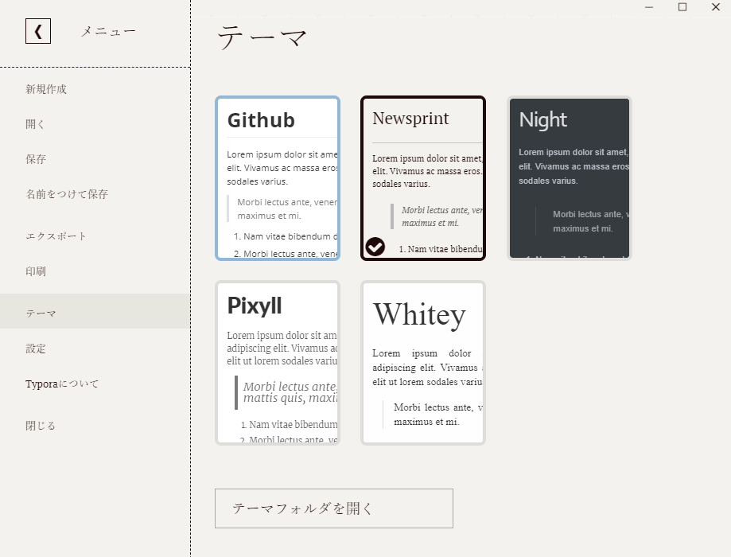

この文書のようなMarkDown形式の文書の書き方および公開の仕方を紹介します。
例えばQiitaやGitHubのREADMEはこれで書かれています。テキストを簡単に装飾しながら書くことができます。例えば、
x# マークダウンとはテキストを簡単に装飾しながら書くことができます。## 数式も挿入できます### いろいろな数式- Newton Equation$$m\frac{d^2x}{dt^2}=F \tag{1}$$1. [Quiita](https://qiita.com/)プログラマ向けの記事以外にも数学、物理、エンジニア向けの記事が沢山あります。2. [GitHub](https://github.com/Nociws)ファイルのバージョン管理ができます。----------------------------------------------------------
と打てばこんな感じで綺麗に表示されます ↓
テキストを簡単に装飾しながら書くことができます。
markdownをどのように表示されるか確認しながら書くにはエディタが必要です。VScodeとかAtomでもいいんですが、markdown専用のエディタを使うと便利です。ここではTyporaというエディタを使うことにします。
ここに飛んでDownloadというページからパソコンにいれてください。
左上のボタンからいろいろ設定できます。そのままでもいいんですが、自動保存にはチェックを入れておくといいかもしれません。これをしておくと「保存してないのにPCが落ちた...」ということがなくなります。自動保存したくない場合はctrl+sでこまめに保存しておきましょう。
あと、既定のアプリにしておきましょう。windows10なら
スタート→設定→アプリ→既定のアプリ→ファイルの種類ごとに既定のアプリを選ぶ→ .mdの欄をTyporaにする
.mdというのがmarkdownファイルの拡張子です。
テーマは好きなやつを選んでください。これのページはNewsqriptというやつで書いてます。

Typoraから新しいファイルを作ってもいいですし、普通のファイルと同じように作ってもいいです。例えば、ファイルを置いておきたい場所で
右クリック→新しいファイルを作成→ファイル名をtest.mdにする
これでtest.mdをクリックするとTyporaが開きます。
早速、上で紹介した例を打ってみましょう。
xxxxxxxxxx# マークダウンとはテキストを簡単に装飾しながら書くことができます。## 数式も挿入できます### いろいろな数式- Newton Equation$$m\frac{d^2x}{dt^2}=F \tag{1}$$1. [Quiita](https://qiita.com/)プログラマ向けの記事以外にも数学、物理、エンジニア向けの記事が沢山あります。2. [GitHub](https://github.com/Nociws)ファイルのバージョン管理ができます。----------------------------------------------------------
数式を書けるのがいいですね。例のように$$で囲めば数式のブロックになりますし、$で囲めば文章中に数式を書けます。記法はMathjaxとかLaTeXというキーワードでググれば出てきます。ここなんかよくまとまってます。
画像も埋め込めます。
xxxxxxxxxx
ファイルのパスというのはファイルの場所です。markdownファイルと同じフォルダにimagesというフォルダを作ってphoto.pngという画像ファイルを入れておけば、
xxxxxxxxxx
これで表示できます。Typoraなら右クリック→挿入→画像でも貼り付けられます。
エクスポート→PDF
で書きだせます。これなら背景も白くなるので印刷できますし、どこかに提出するときはPDFの方が便利ですね。
GitHub pagesを使えばこのページのように簡単にウェブで公開できます。詳しくは別の文書にまとめます。